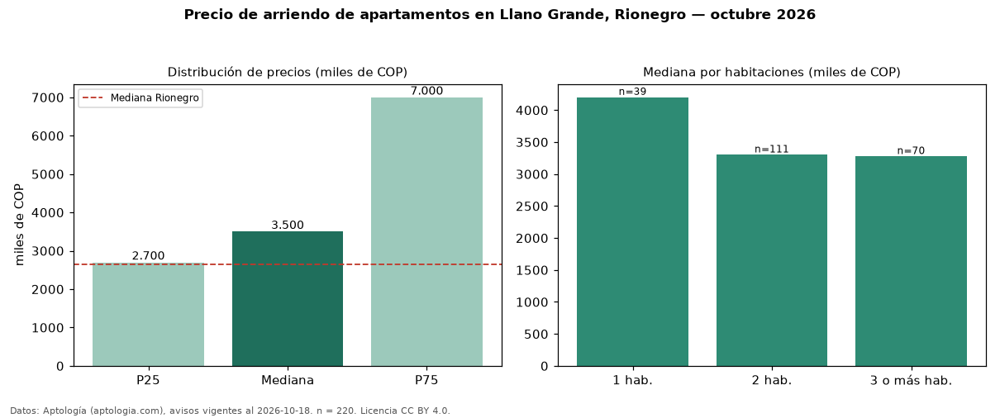

Precio de arriendo de apartamentos en Llano Grande, Rionegro — octubre 2026
En Llano Grande, Rionegro, la mediana de canon mensual de apartamentos es COP 3,50 millones, según 220 avisos vigentes. Eso es 32 % por encima de la mediana de Rionegro para apartamentos (COP 2,65 millones). Por metro cuadrado, la mediana es COP 48.472/m² al mes (n = 218 avisos con área), 29 % por encima de Rionegro (COP 37.500/m²). Por precio mediano es el puesto 3 de 17 barrios de Rionegro con al menos 30 avisos de apartamentos en arriendo (COP): entre las más caras. Con el precio por m² de venta del mismo segmento (COP 9,50 millones/m²), la rentabilidad bruta implícita es 6,1 % anual (aproximación con medianas de ofertas distintas). La mitad central de los avisos va de COP 2,70 millones a COP 7,00 millones (razón 2,6), una dispersión alta. El área mediana anunciada es 76 m². El segmento con más oferta es el de 2 habitaciones (111 avisos, mediana COP 3,30 millones); pasar de 1 habitación a 3 o más habitaciones cambia la mediana −22 %. Datos: Aptología (aptologia.com), CC BY 4.0 — https://www.aptologia.com/arriendo/rionegro/llano-grande. Archivos: PDF, CSV con las cifras y gráfica PNG.

| Avisos únicos | 220 |
|---|---|
| Percentil 25 | COP 2.700.000 |
| Mediana | COP 3.500.000 |
| Percentil 75 | COP 7.000.000 |
| Mediana por m² | COP 48.472 |
Fuente: avisos vigentes de portales inmobiliarios recopilados por Aptología, deduplicados (mínimo 30 avisos únicos por celda). Precios pedidos, no cerrados. Fecha: 2026-10-18.